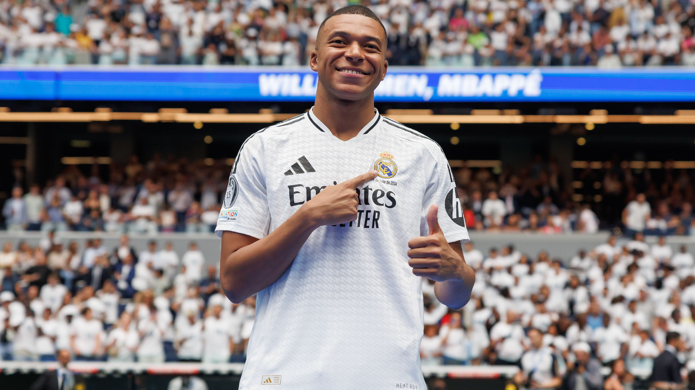

Ronaldo Signs New Contract
Cristiano Ronaldo has extended his contract with Al Nassr, committing to the club for another year.
Published on: 2024-10-20Cristiano Ronaldo is a Portuguese professional footballer who plays as a forward for Al Nassr and the Portugal national team. He is considered one of the greatest football players of all time.
Lionel Messi is an Argentine professional footballer who plays as a forward for Inter Miami and the Argentina national team. He has won multiple Ballon d'Or awards.
Neymar Jr. is a Brazilian professional footballer who plays as a forward for Al Hilal and the Brazil national team. Known for his skill and flair, he is one of the most marketable athletes in the world.

Kylian Mbappé is a French professional footballer who plays as a forward for Paris Saint-Germain and the France national team. He is known for his speed and scoring ability.
Kevin De Bruyne is a Belgian professional footballer who plays as a midfielder for Manchester City and the Belgium national team. He is regarded as one of the best playmakers in the world.

Cristiano Ronaldo has extended his contract with Al Nassr, committing to the club for another year.
Published on: 2024-10-20Lionel Messi played a crucial role in Argentina's recent victory over Brazil in a World Cup qualifier.
Published on: 2024-10-19Neymar is set to return to the pitch after a lengthy injury layoff, boosting Al Hilal's hopes for the season.
Published on: 2024-10-18